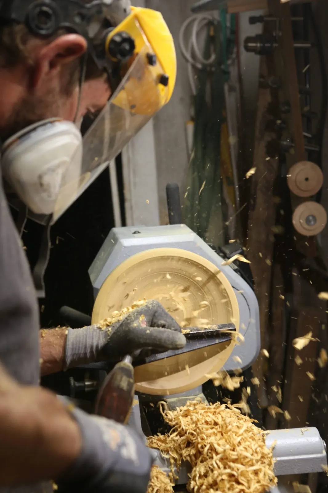
Greg, élagueur et tourneur sur boisRocbaron, dans le Var
Un atelier familial de créations bois
Jeux éducatifs, objets des arts de la table, pièces sur mesure et ateliers pour devenir artisan du bois d'un jour.
- Mai 2019Naissance de Bouliwood
- EscoulenFormation au tour à bois, Aiguines
- Bois récupéréÉlagages et chutes de bois brutes
- 5 ★13 avis de BouliLovers
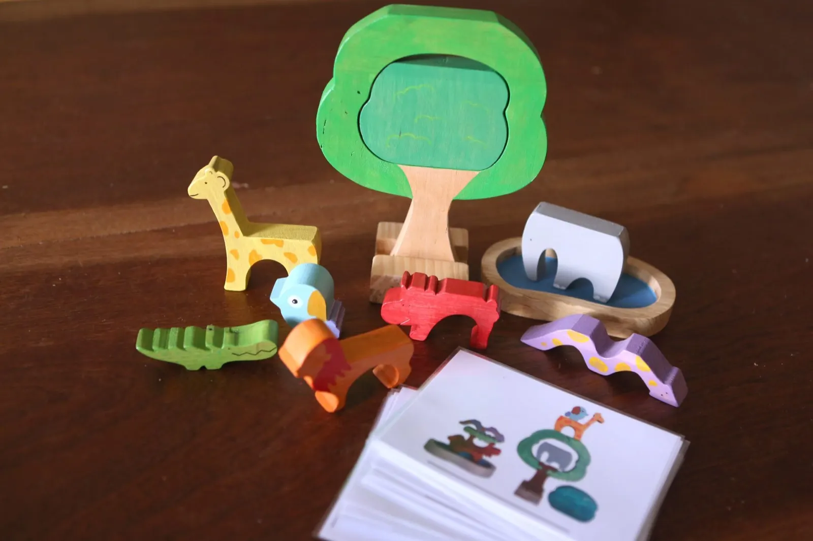
Jeu Topologie Nature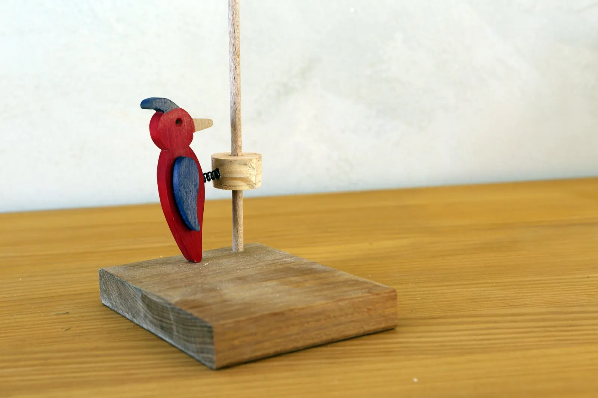
Le pic-vert sur ressort, un modèle imaginé par mon papa
Nos jeux en bois
Le jeu éducatif prend une place importante dans mes créations, et je m'essaie aussi aux jeux de société. Certains modèles viennent tout droit de l'imagination de mon papa.
- Jeux d'éveil
- Hochets
- Jeux à tirer
- Animaux en bois
- Puzzles
- Jeux de mémoire
- Jeux d'équilibre
- Casse-tête
- Dés à Histoires
- Toupies
- Jeux de société
Par âge : à partir de 3 mois, 6 mois, 1 an, et jusqu'à 8 ans.
Devenez artisan du bois d'un jour
Des ateliers créatifs autour du bois, ouverts aux enfants comme aux adultes. Chacun manipule la matière, découvre différentes essences de bois et s'initie aux gestes de l'artisanat.
Un moment convivial pour apprendre, créer et repartir avec sa propre réalisation. Ateliers adultes et enfants à partir de 5 ans.
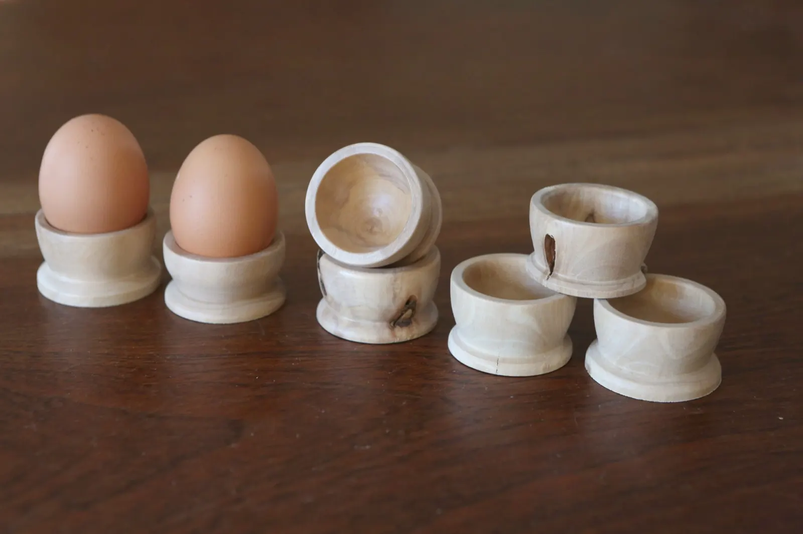
Atelier coquetier, avec Grégory-
Initiation découpe à la scie à chantourner Inscriptions ouvertes
40 €par personne
-
Création d'un château fort en bois Inscriptions ouvertes
65 €par enfant
-
Création d'un jeu de memory en bois Inscriptions ouvertes
75 €par personne
-
Fabrication d'un coquetier au tour à bois
70 €par adulte
-
Fabrication de toupies au tour à bois
55 €par adulte
-
Atelier parent et enfant : un objet en bois
65 €par enfant
Contactez-moi par SMS ou par mail avec un maximum de détails sur votre souhait et vos disponibilités, je vous répondrai au plus vite. Et désormais, vous pouvez aussi créer votre propre atelier, en famille, entre amis ou pour un événement.
Bouliwood est né en mai 2019
Je crois que c'est en moi depuis que je suis petite : j'ai eu la chance d'avoir un papa menuisier issu de l'école Boulle à Paris. Il confectionnait des meubles, des horloges, des dessous de plat et même des jouets. Certains de mes modèles sont d'ailleurs issus de son imagination.
C'est l'arrivée de ma fille qui a fait germer l'idée : j'ai commencé à confectionner des jouets pour elle, puis à les présenter sur les marchés. J'y ai embarqué mon compagnon : nous avons fait ensemble la formation d'initiation au tour à bois de la grande école de tournage Escoulen, à Aiguines dans le Var.
Aujourd'hui, nous voilà avec un garage rempli de copeaux, une maison devenue un atelier permanent, des enfants bons testeurs de produits et des pièces de bois en cours de partout !
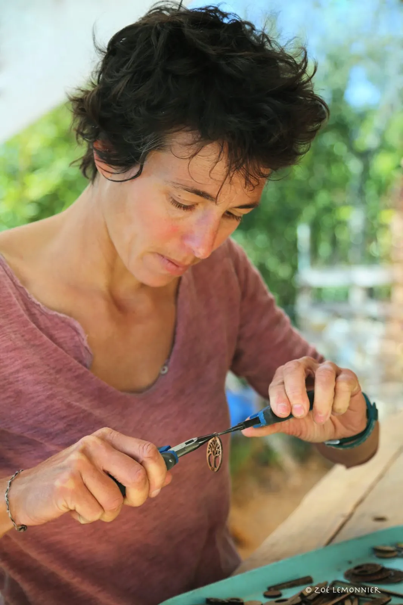
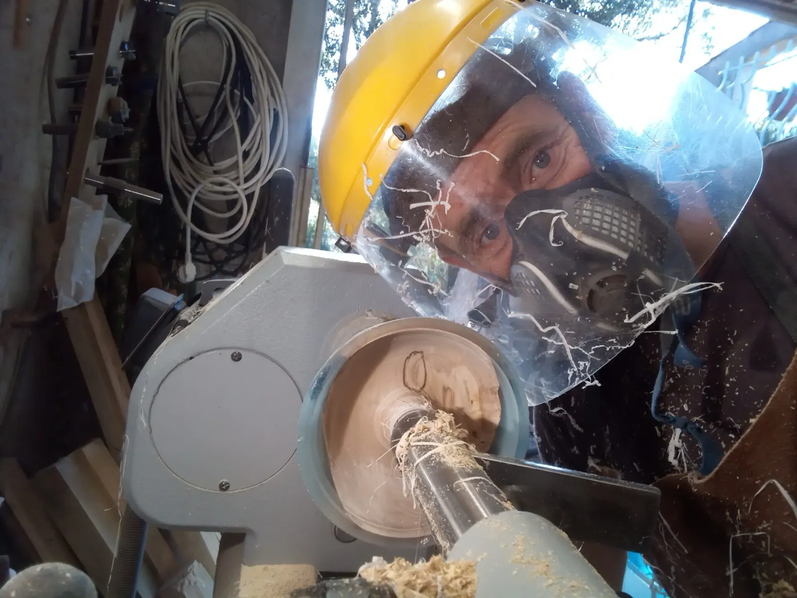
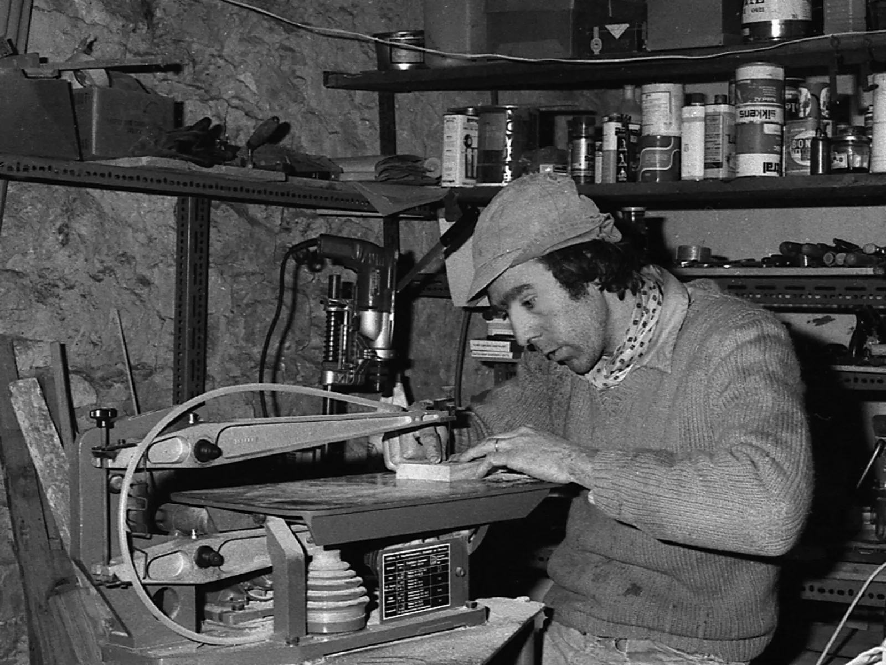
Frédéric Bluche, mon papa, il y a plus de 30 ans
Le bois plaît, le bois traverse les années. Une véritable passion est née.
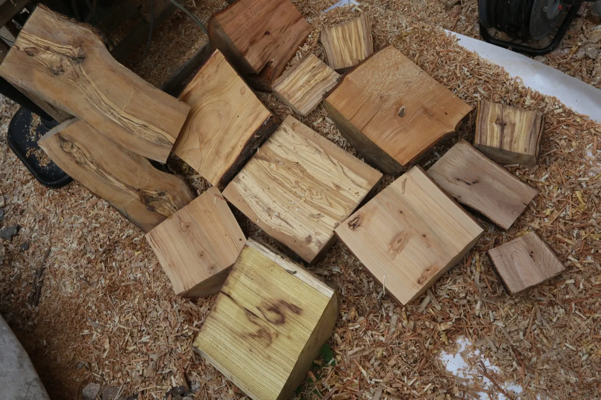
Du bois issu d'élagages
Je « traque » les menuisiers, les scieries, les ébénistes pour récupérer les chutes de bois brutes destinées à être jetées ou brûlées. Mon compagnon est élagueur : il récupère le bois qui lui permettra de fabriquer des assiettes, des bols ou encore des toupies.
Peut-être mangerez-vous dans une assiette faite à partir d'un arbre que vous avez déjà croisé !
Pour la table, et sur mesure
Planches de présentation, plats apéro, couverts, coquetiers, saladiers. Les objets de cuisine sont huilés à la cire d'abeille d'un apiculteur de Saint André les Alpes, mélangée à de l'huile de tournesol : on appelle cela « la popote ».
L'idée de Bouliwood est de faire ce qui vous plaît : pièces uniques, personnalisation, petites séries, pour les particuliers comme pour les professionnels.
Voir les arts de la table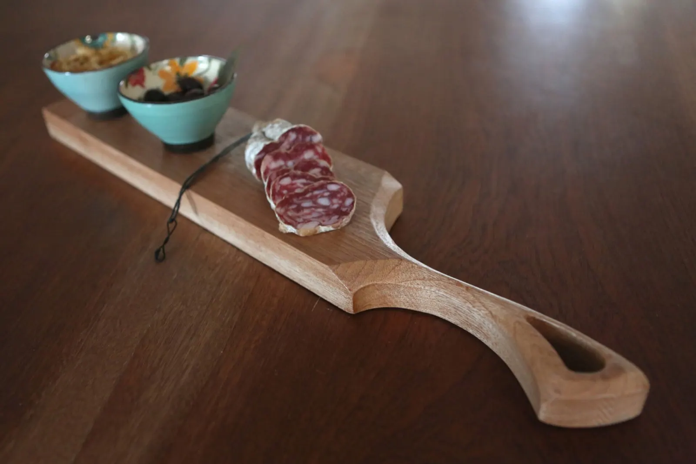
Plat apéro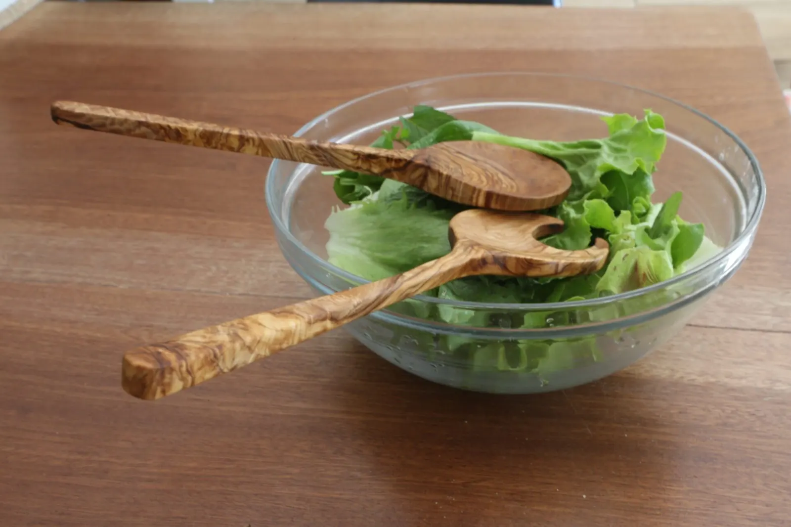
Il y a la boutique en ligne, mais aussi une vraie boutique
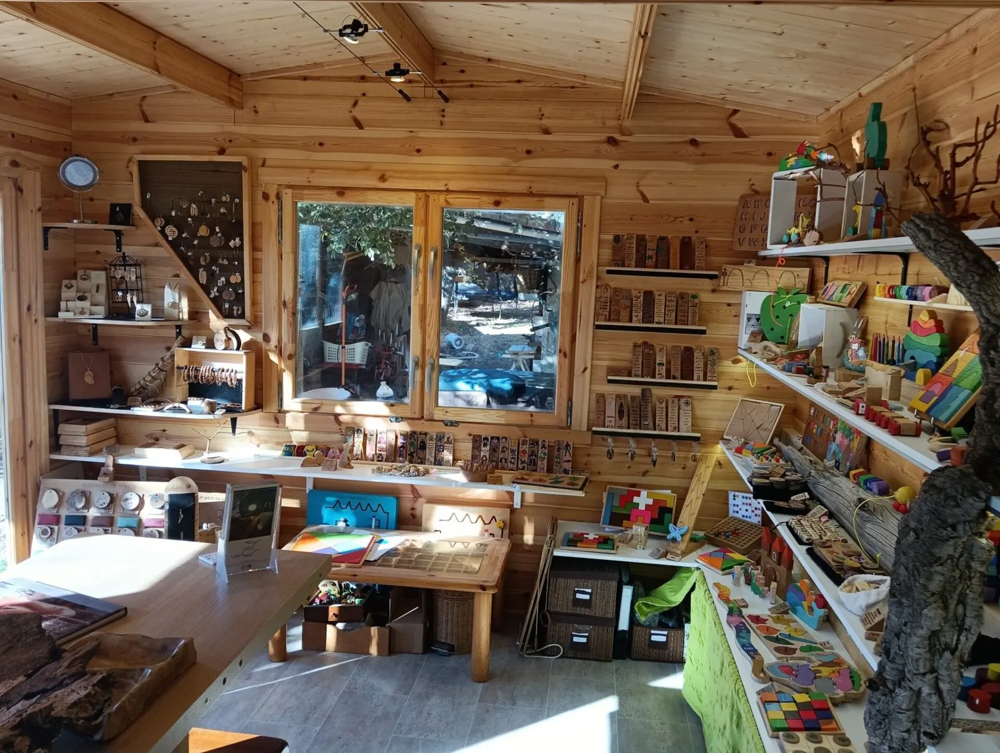
La boutique, à Rocbaron- Lundi, mardi, jeudi, vendredi
- 16h30 à 19h
- Mercredi
- 13h à 16h
- Autres moments
- Sur rendez-vous, par SMS
Même pendant les horaires d'ouverture, un petit SMS avant votre venue est toujours apprécié, idéalement la veille : il m'arrive de ne pas avoir mon téléphone sur moi lorsque je travaille.
6 lotissement les écureuils
83136 Rocbaron
Lorsque vous arrivez dans le lotissement, allez toujours tout droit, le portail est au fond à droite !
Sur les marchés et salons
- 14 et 15 nov.Salon Scrap and Co 83Place Trotobas, Ollioules, 10h à 18h
- 21 et 22 nov.Salon GalathéaForum du Casino, Hyères, 9h à 19h
- 27 au 29 nov.Salon Fémin'artPalais Neptune, Toulon, 10h à 19h
- 12 déc.Marché de NoëlSalle Valérie Garnier, La Valette, 9h à 17h
- 13 déc.Marché de NoëlCentre ville de Rocbaron, 9h à 18h
- 20 déc.Marché de NoëlSaint Maximin, 9h30 à 18h